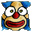
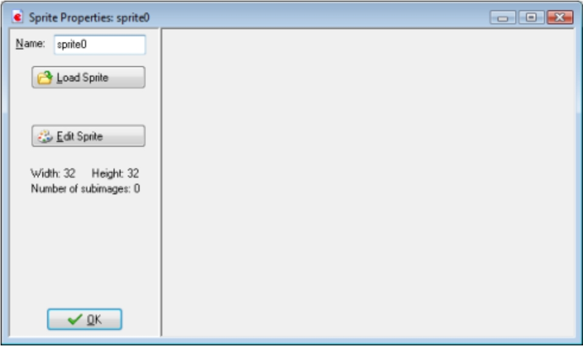
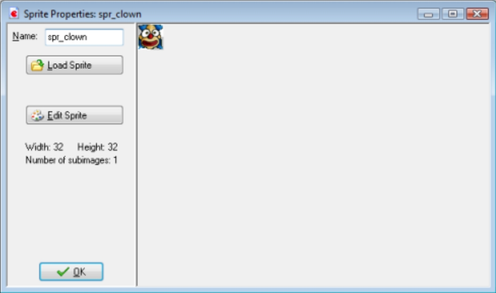

As the game design document describes we will need two images for the two game objects.
Such images
are called sprites in Game Maker.
There is a lot to know about sprites but for the moment, simple think of them as little images.
Said images are in the resource folder that you should've already downloaded.
The images that you will need are the clown:

And the wall:
1. From the Resources menu, choose Create Sprite. The Sprite Properties form appears, like the one shown in the image below.

2. Click on the Name field where currently is says sprite0. This is the default name for the sprite.
Rename it to spr_clown.
3. Click on the Load Sprite button. This opens a file browser.
4. Navigate to the Resources folder that came with this tutorial and selected the image file
clown.png. The Sprite Properties form should now look like the image below.
5. Press the OK button to close the form.

Next we will add the wall object in the same way.
1. From the Resources menu, choose Create Sprite. Click on the Name field and rename it to
spr_wall.
2. Click on the Load Sprite button and select the image file wall.png.
3. Press the OK button to close the form.
As you might have noticed, the clown and wall sprite have now appeared in the list of resources at the left of the Game Maker window. Here you will always find all the sprites, sounds, objects, rooms, etc. that you have created in your game. Together we call them the resources of the game. You can select a resource by clicking on its name. Now you can use the Edit menu to change the resource, duplicate it, or delete it. Right-clicking on the resource name will show the same menu. This overview of resources will become crucial when you are creating more complicated games
Now that we created the sprites we will create two sound effects. One must play when the clown hits a wall and the other must play when the clown is successfully caught with the mouse. We will use two wave files for this. Wave files are excellent for short sound effects. A number of these sound effects are part of the installation of Game Maker and many more can be found on the web.